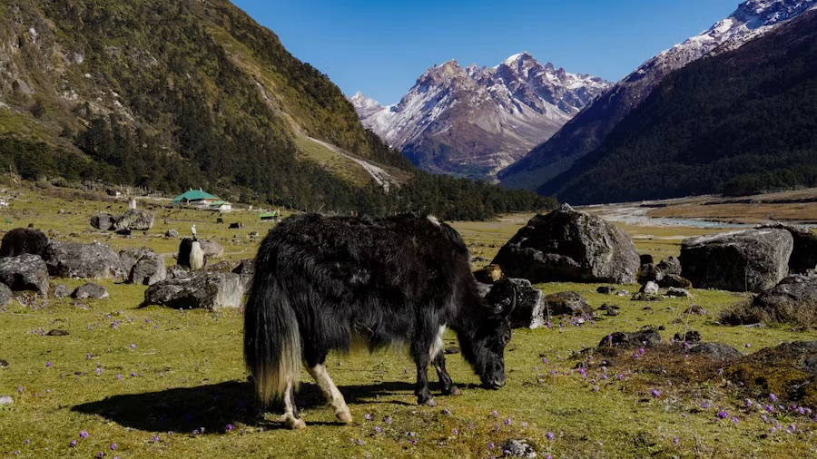
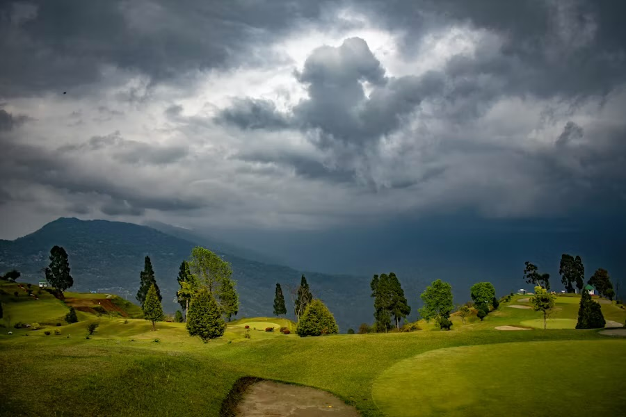
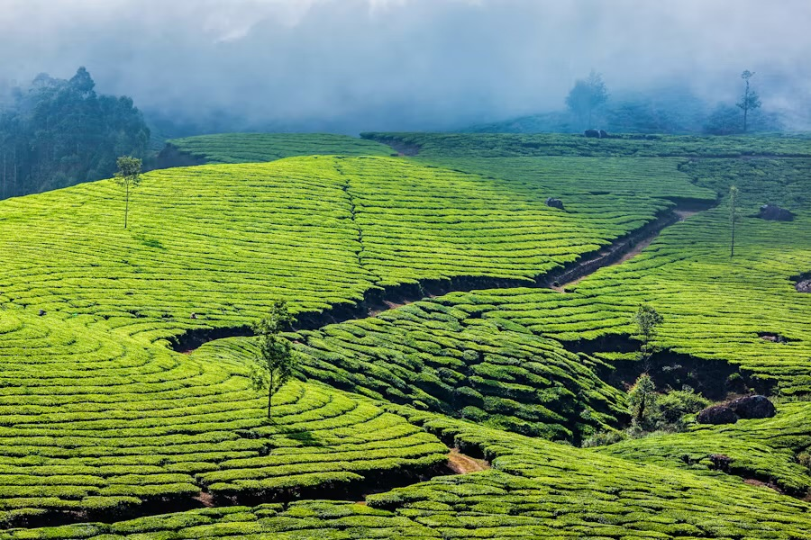
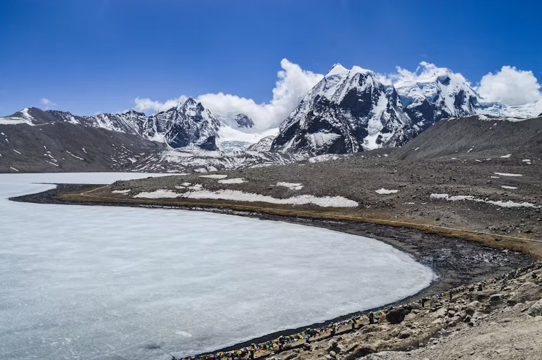

PKG-01
PKG-01
4 Days Darjeeling
Bagdogra / NJPDarjeeling, 3 nightsBagdogra / NJP
The shortest way to do Darjeeling properly — Tiger Hill at sunrise, the town over a full day, and Mirik and the Nepal border on the third.
Error 404
The page you were after has moved or never existed. The routes below are all still running.
Our routes
PKG-01
Bagdogra / NJPDarjeeling, 3 nightsBagdogra / NJP
The shortest way to do Darjeeling properly — Tiger Hill at sunrise, the town over a full day, and Mirik and the Nepal border on the third.
 PKG-02
PKG-02
Bagdogra / NJPGangtok, 3 nightsBagdogra / NJP
Gangtok at an unhurried pace: a full day in and around the town, and a full day up at Tsomgo Lake.
 PKG-03
PKG-03
Bagdogra / NJPGangtok, 2 nightsDarjeeling, 2 nightsBagdogra / NJP
Both hill stations in five days, with Tsomgo Lake on one end and Tiger Hill on the other. The most-asked-for route we run.
 PKG-04
PKG-04
Bagdogra / NJPGangtok, 2 nightsPelling, 2 nightsBagdogra / NJP
East to west across Sikkim, taking in Tsomgo Lake, the giant statues at Namchi and Ravangla, and Pelling's monasteries.

PKG-05Bagdogra / NJPGangtok, 3 nightsLachung, 1 nightBagdogra / NJP
The North Sikkim run. Tsomgo Lake, the long road to Lachung, and the Yumthang Valley at 3,564 m.

PKG-06Bagdogra / NJPGangtok, 2 nightsKalimpong, 1 nightDarjeeling, 2 nightsBagdogra / NJP
Three hill towns in six days, with a night in Kalimpong breaking the drive between Gangtok and Darjeeling.

PKG-07Bagdogra / NJPGangtok, 3 nightsDarjeeling, 2 nightsBagdogra / NJP
The five-day route with a day put back where it is missed most — a full day for Gangtok instead of a rushed morning.
 PKG-08
PKG-08
Bagdogra / NJPGangtok, 3 nightsPelling, 2 nightsBagdogra / NJP
Sikkim end to end without hurrying: a full day in Gangtok, a day at Tsomgo, and two nights under the range at Pelling.

PKG-09Bagdogra / NJPGangtok, 3 nightsLachung, 1 nightDarjeeling, 2 nightsBagdogra / NJP
Everything we run, in one week: Tsomgo Lake, North Sikkim as far as Yumthang, and Darjeeling to finish.